Gym Membership Desktop Database Application for City Gym
Project Background
This project involved converting a paper-based membership application of a fictitious business, City Gym, into a desktop application that would run on their new Microsoft Windows computers. Later on, the application was enhanced to a multi-page database application.
Discovery
The initial project requirement was to convert the paper-based membership application form to a digital version. New gym members needed to sign up with their personal information and calculate their membership costs. New membership information initially needed to be stored in a text file once submitted.
Later on, further enhancements were required for the creation of a SQL database to store membership information and to allow staff to search for existing gym members and update their information, as seen on the member search screen.
Another requirement added to the project was to design a screen that would allow gym members to book a fitness class.
Design
A concept for the design of the gym membership application screen was first created by brainstorming ideas. A connectivity diagram was then created to design the application structure and add user interactivity. This was then used to create a wireframe that mapped out user interaction and functionality of the screen, after which, a prototype was created within Visual Studio 2022.
Additional wireframes were later created for all other screens to display user interface elements needed when enhancing the desktop application to a database application. This was followed by the creation of prototypes from these wireframes within Visual Studio 2022.
The SQL database would store new gym memberships once submitted from the gym membership screen and records would be queried and updated by staff when searching for a member. The SQL database was designed with an Entity Relationship Diagram (ERD) and two of the classes were designed with a Unified Modelling Language (UML) diagram and added to the database to accommodate additional enhancements of booking a fitness class.
Development
The application and SQL database was developed with the .NET Framework within Visual Studio 2022. It runs on a Microsoft Windows operating system and was written in the C# programming language.
Jakob Nielsen's Usability Heuristics were implemented within the application and include:
-
Informing the user of the state the system is in.
- Each screen has clear headings.
- User selections are clearly visible through radio buttons and checkboxes that are not selected by default and buttons to clear results or reset forms also remove these selections.
- Important information is communicated to users with a pop-up message box, labels that change colour and instructions that appear on the screen.
- Mimicking a real-life experience of adding and searching for a new member with easy-to-understand language that does not contain jargon.
- Allowing users to undo mistakes and exit the application at any stage of the program gives users control and alleviates user frustration.
-
Implementing industry conventions and system standards.
- Only adding a new membership if consent was given by the client to share their personal information with City Gym for administrative purposes.
- Allowing new members to opt-in for their information to be shared with third parties for marketing purposes.
- Making the main menu screen easy to find by adding a link to it in the top menu bar.
-
Preventing errors before they occur and alleviating incorrect data from being populated and entered into the database.
- Displaying a warning message if a user tries to search for a member without search criteria or adds a new membership without completing the form.
- Changing instructions displayed to users when calculating a membership cost to red when those instructions are not followed.
- Making user instructions and selections clearly visible to alleviate the need for users to memorise information.
- Allowing advanced users to tab through each screen to interact with the application faster than novice users that use their mouse.
- Linking screens to help instructions relevant to the screen the user is viewing to make it simple for the user to find relevant information.
- Using plain language with no error codes in error messages and including suggestions to solve errors.
- Helping users understand how to interact with each screen through help instructions.
Testing
User acceptance testing was carried out with a test plan indicating the expected and actual results of all test items to ensure the application was functioning as intended.
A user experience test (UAT) was also carried out with a user survey to establish whether the application was easy and simple to use. The test revealed that a clearer way was needed to advise the user when a new member was added. This functionality was added to the application with a pop-up message box displayed to the user which was then tested with user acceptance testing (UAT).
Deployment
Deploying to platforms other than a Microsoft Windows operating system was not a requirement for this project because the gym intended to use the application on their computers. However, by upgrading the application to the latest .NET platform, the application could be deployed to multiple operating systems thereafter.
Unfortunately, this application is not available online. However, it is available via a .zip file on request and approval.
Evaluation
Enhancements included converting the application to a multi-page database application to allow staff to search for existing gym members with their first names and/or membership types and update their personal information.
Also, a fitness class booking screen was designed and added to the application to allow gym members to sign up for a fitness class. The functionality of this screen was not required for this project because it would be completed at a later stage.
Lastly, help screens were added to make it easy for users to interact with the application. These screens were made available from every screen.
Further enhancements could be made to the application to add authentication by letting users log in before being able to access the member search screen. Gym member information could then be kept private and protected from other gym members and accessible only to staff with authorisation.
Take a Closer Look
The screenshots below show what the application looks like in action.
Screens for User Interaction
The Main Menu Home Screen
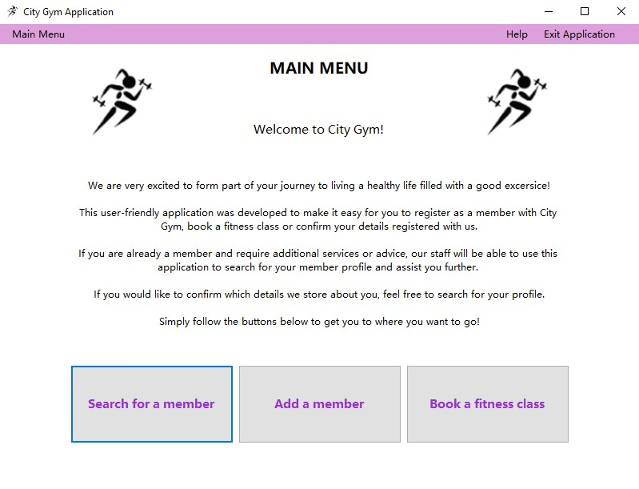
Searching for a Member
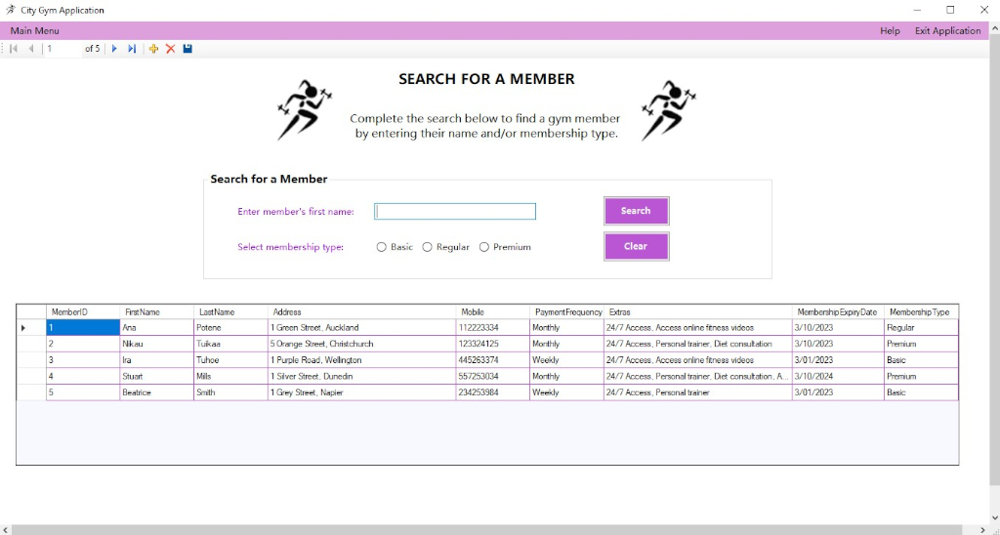
Searching with the Letter ‘i’
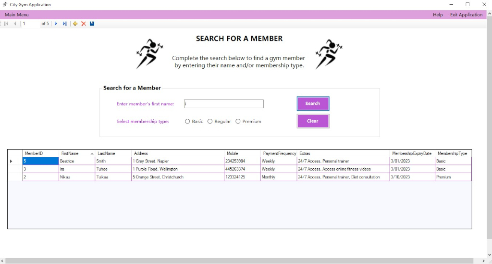
Searching with the Letter ‘i’ and a Premium Membership Type
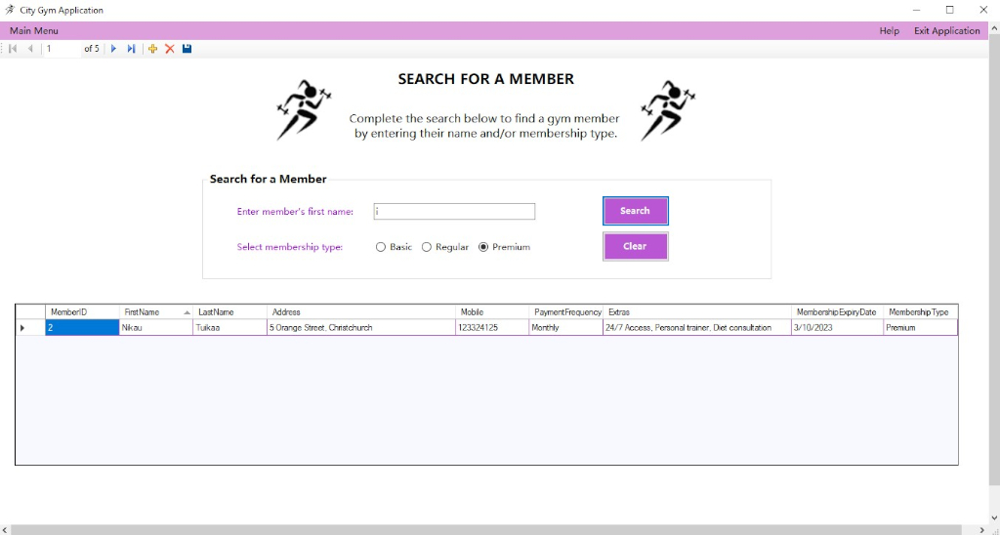
Searching with a Premium Membership Type
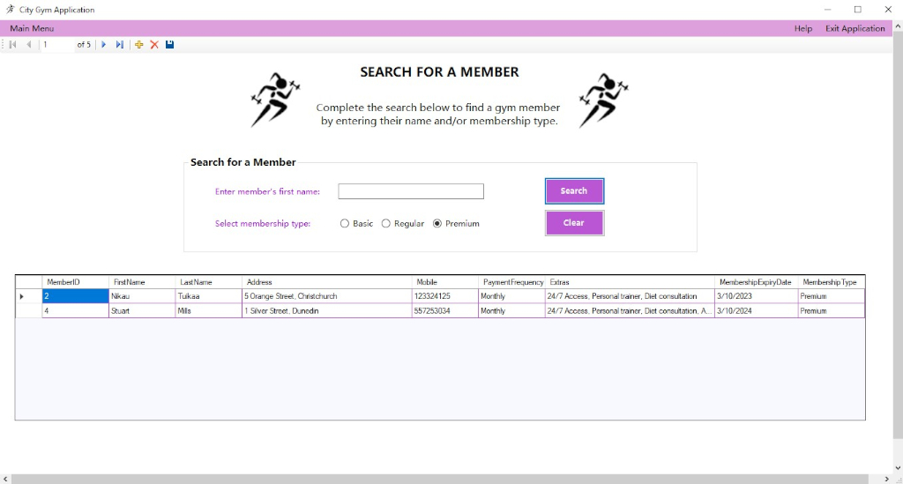
Adding a Gym Member
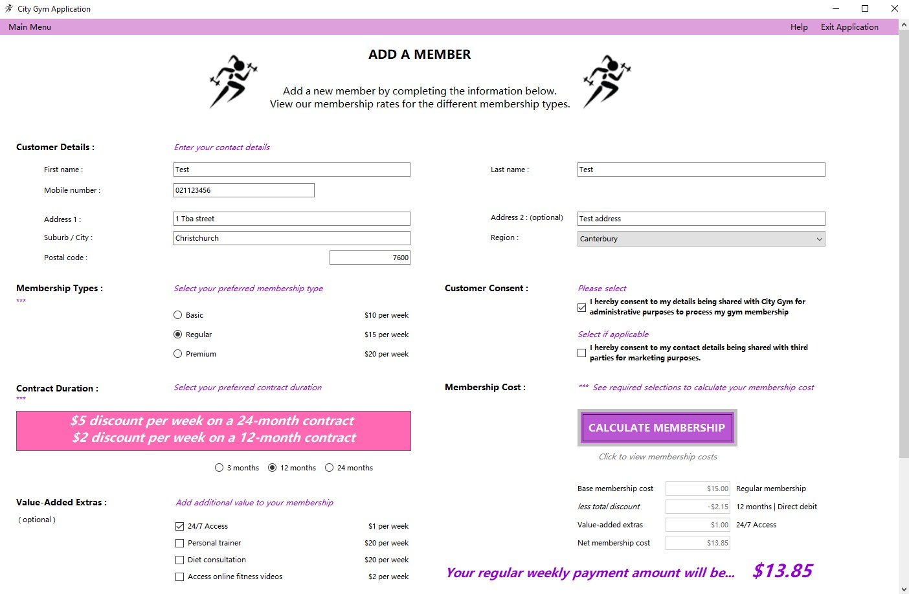 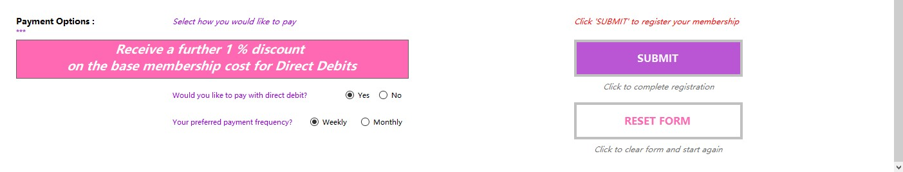
Booking a Fitness Class
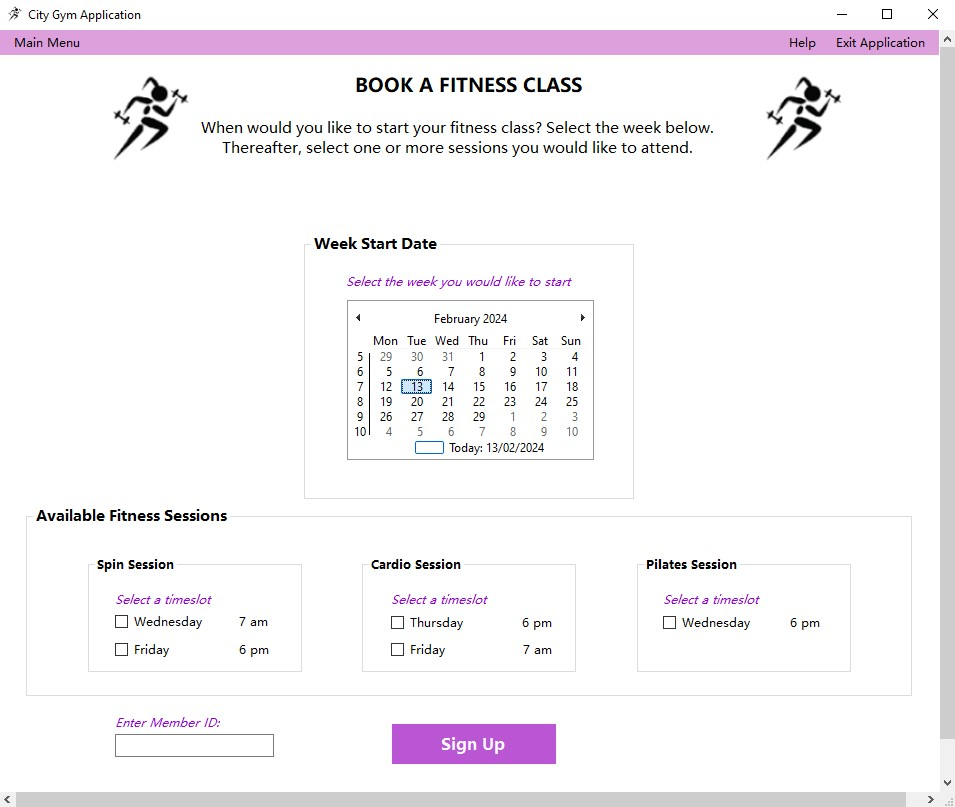
Screens with Help Instructions
Help with Navigation
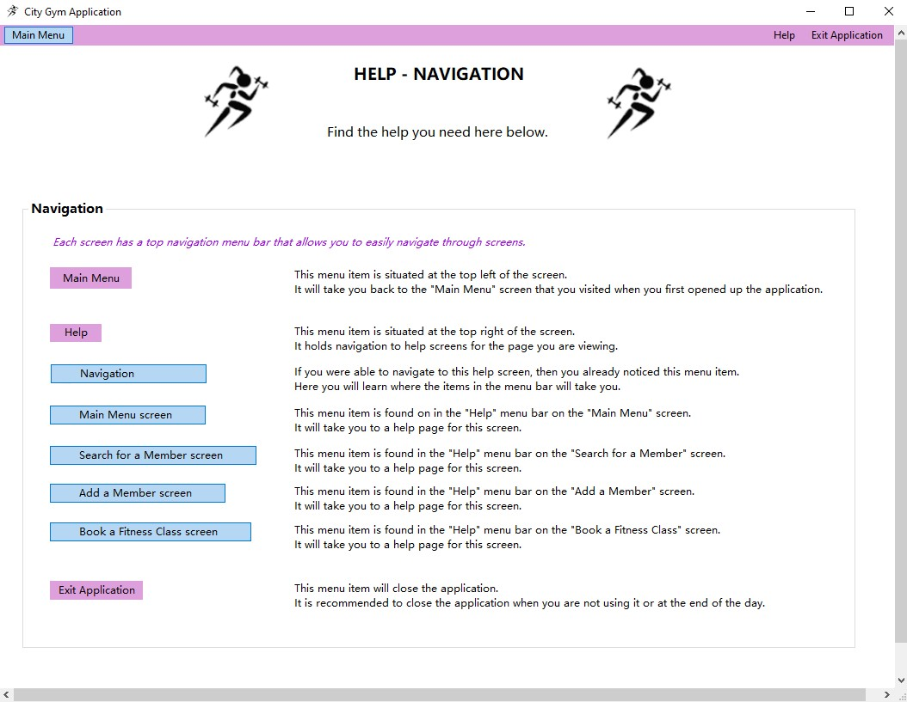
Help for the Main Menu
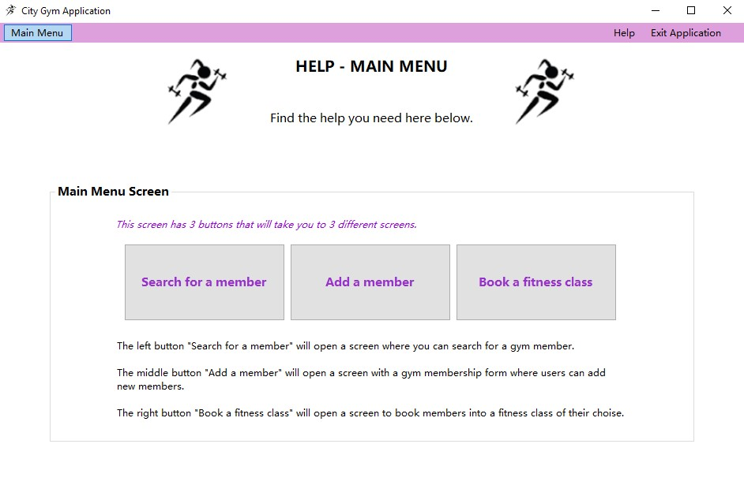
Help to Search for a Member
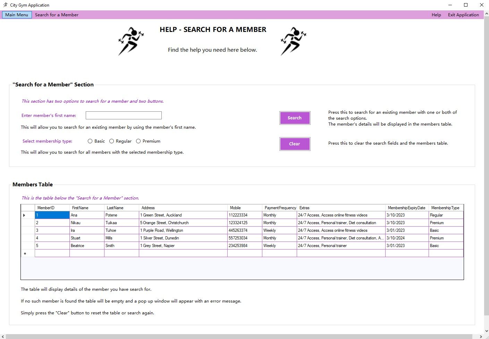
Help to Add a Member
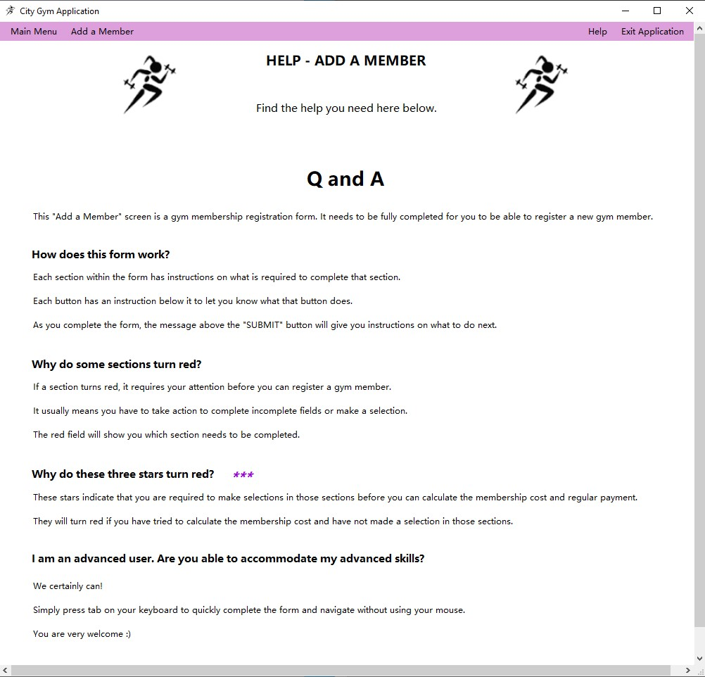
Help to Book a Fitness Class
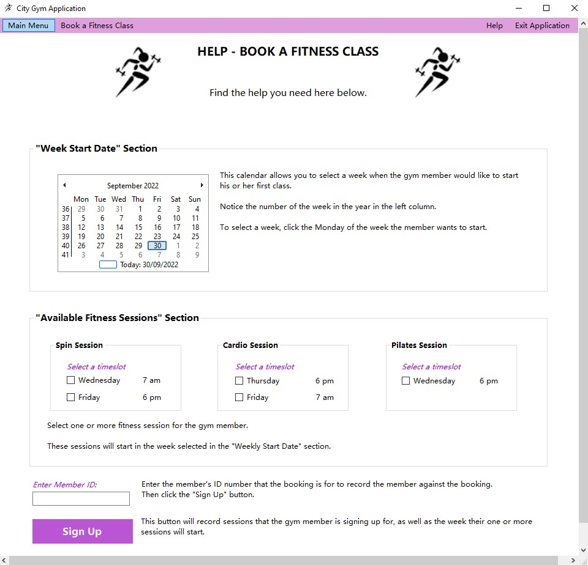